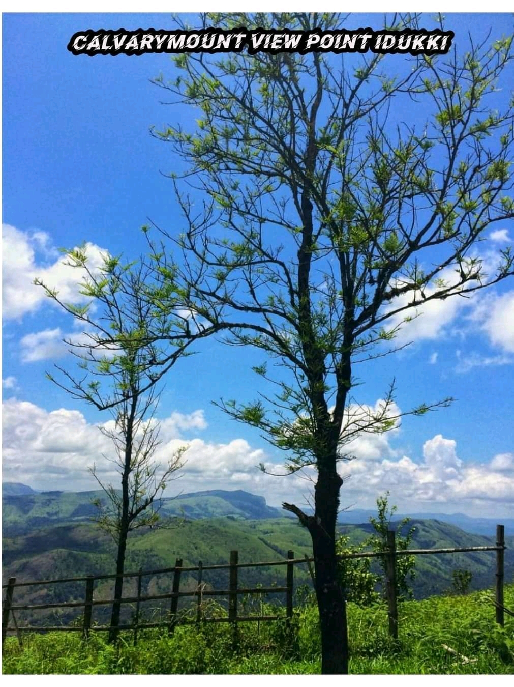
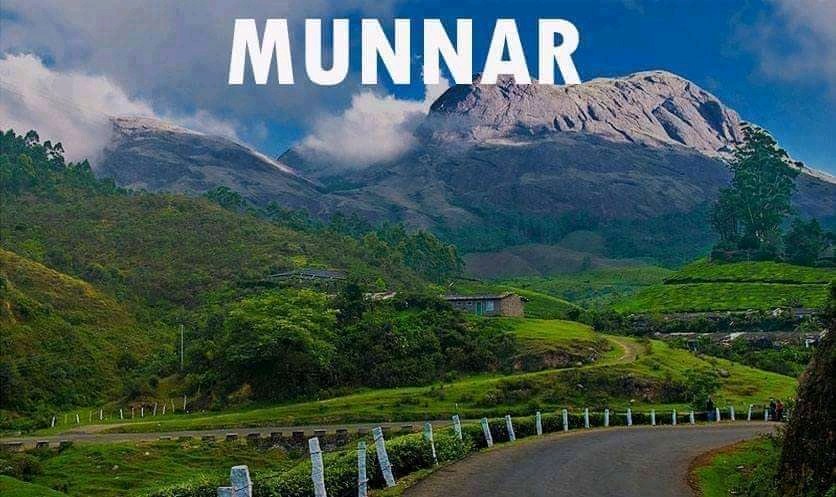
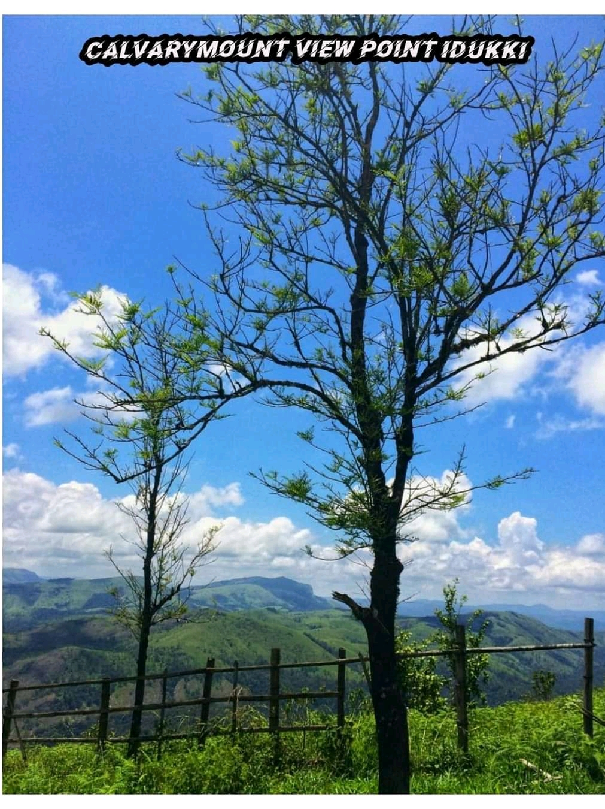
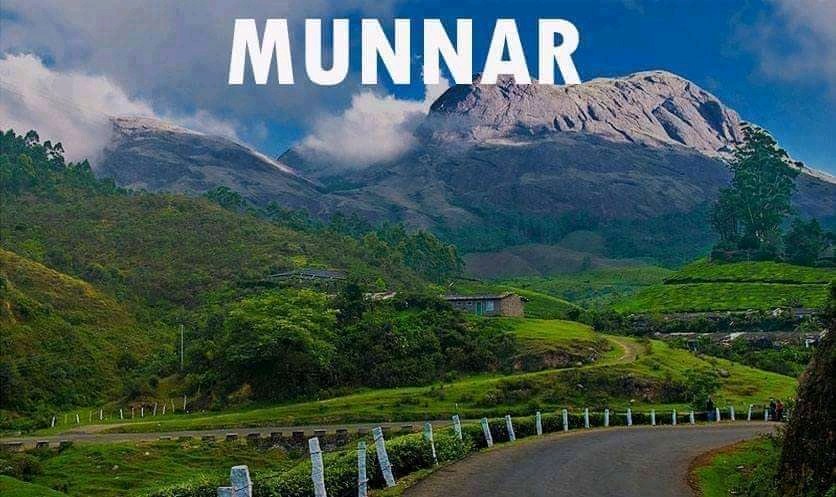

Idukki district is a densely forested,mountanious region in the south Indian state of Kerala. In the north,Anamudi mountain towers over Eravikulam National park, where the rare, blue Neelakurinji flower blooms every 12 years. Nearby, Munnar is a hill station known for its sprawling tea plantations and tea Museum.Farther south is the vast, curved Idukki Dam and Periyar national park,a tiger and elephant reserve.
Munnar is atown in the western ghats mountain range in India's Kerala state.A hill station and former resort for the British raj elite,its surrounded by rolling hills dotted with tea plantations established in the late 19th century.
Kalvari mount is an eco tourism destination on the high reaches of Idukki district.This is an awessome place with stunning view to Idukki reservoir. climate is super and nice breeze
Vagamon is an Indian hill station and a revenue village primarily located in Peerumedu taluk of Idukki district and also Meenachil taluk and Kanjirappally taluk of Kottayam district in the sate of Kerala.It has a cool climate with the temperature brtween 10-23 degree C.
Hill view park, one of the Idukki tourist places, located at the distance of 2 km from Idukki bus stand. The natural beauty of the hilly terrain draws visitors from all over the world.One spectacular charm of Idukki is the Hill view park.